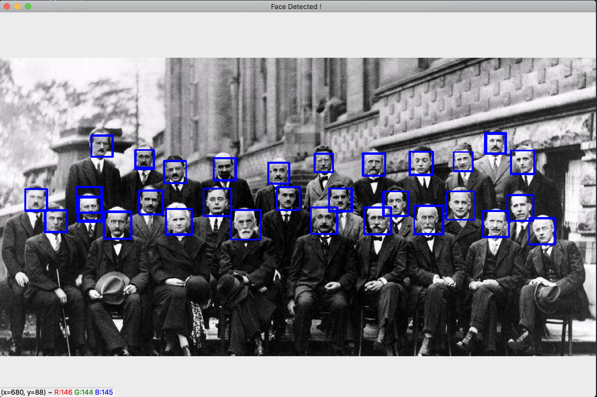

In last post, we discussed an algorithm to do the face detection using LBP descriptor. However, it is not the only way do it. Another popular way is to use Haar-like Features.
This post is split into three sections:
- The Basic Principles of Haar
- Practice with OpenCV in Python
- Compute Haar From Scratch
Source code: https://github.com/BillMaZengou/cv_basis -> haar.py (OpenCV)
The Basic Principles of Haar
All human faces share some similar properties. These regularities may be matched using Haar Features.
Practice with OpenCV in Python
Documentation
In OpenCV, we can use exactly the same code as the last post. However, we need to replace the xml file of LBP to it of the Haar.
In the corresponding environment, use
pip show opencv-python
to find the location of the library.
Then enter the location, follow with
cd cv2 && ls data
to find haarcascade_SOMETHING.xml files which are pre-trained for different purposes.
Implementation
import cv2
import numpy as np
haar_front_face_xml = 'haarcascade_frontalface_default.xml' # Your .xml file directory
haar_eye_xml = 'haarcascade_eye.xml' # Your .xml file directory
def StaticDetect(filename):
face_cascade = cv2.CascadeClassifier(haar_front_face_xml)
img = cv2.imread(filename)
gray_img = cv2.cvtColor(img, cv2.COLOR_BGR2GRAY)
faces = face_cascade.detectMultiScale(gray_img, 1.3, 5)
for (x, y, w, h) in faces:
img = cv2.rectangle(img, (x, y), (x + w, y + h), (255, 0, 0), 2)
cv2.namedWindow('Face Detected！', 0)
cv2.imshow('Face Detected！', img)
cv2.waitKey(0)
cv2.destroyAllWindows()
def DynamicDetect():
face_cascade = cv2.CascadeClassifier(haar_front_face_xml)
eye_cascade = cv2.CascadeClassifier(haar_eye_xml)
# Turn on the camera
camera = cv2.VideoCapture(0)
cv2.namedWindow('Dynamic')
while True:
# Read a frame
ret, frame = camera.read()
if ret:
gray_img = cv2.cvtColor(frame, cv2.COLOR_BGR2GRAY)
faces = face_cascade.detectMultiScale(gray_img, 1.3, 5)
for (x, y, w, h) in faces:
cv2.rectangle(frame, (x, y), (x + w, y + h), (255, 0, 0), 2)
roi_gray = gray_img[y:y + h, x:x + w]
eyes = eye_cascade.detectMultiScale(roi_gray, 1.03, 5, 0, (40, 40))
for (ex, ey, ew, eh) in eyes:
cv2.rectangle(frame, (ex + x, ey + y), (x + ex + ew, y + ey + eh), (0, 255, 0), 2)
cv2.imshow('Dynamic', frame)
if cv2.waitKey(100) & 0xff == ord('q'):
break
camera.release()
cv2.destroyAllWindows()
if __name__ == '__main__':
filename = "..." # Your image directory
StaticDetect(filename) # Image faces/eyes detection
DynamicDetect() # Video faces/eyes detection
Face Recognition

The problem about this approach is similar as the LBP. It has two hyperparameters which are hard to choose. Therefore human intervenes are necessary.
Another issue is that Haar-like features have a greater chance to fail if the object is rotated or tilted.
Compute Haar From Scratch (TODO)
Acknowledgement
The creation of this post is inspired by Datawhale.
Reference
- En.wikipedia.org. 2020. Viola–Jones Object Detection Framework. [online] Available at: https://en.wikipedia.org/wiki/Viola–Jones_object_detection_framework [Accessed 2 July 2020].